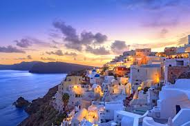
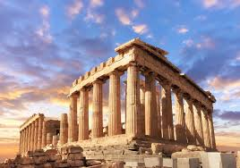
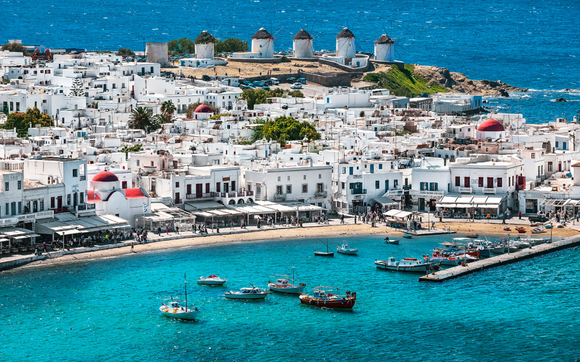

What motivated me to create this website
I have always loved photography and wanted to share my favourite photos with others. This website is a way for me to showcase my work and inspire others to explore their own creativity through photography.
Photos I took in Rome


These are some of the photos I took while visiting Rome. Each location had its own unique charm and beauty.
Photos I took in Paris


Paris is a city full of art and culture, and I was able to capture some of its iconic landmarks through my lens.
Photos I took in Greece



Greece is known for its stunning landscapes and historical sites, and I was fortunate enough to capture some of its beauty in my photos.
Conclusion
I hope you enjoyed viewing my favourite photos and that they inspire you to explore your own creativity through photography. Each photo holds a special memory for me, and I am grateful to have the opportunity to share them with others.